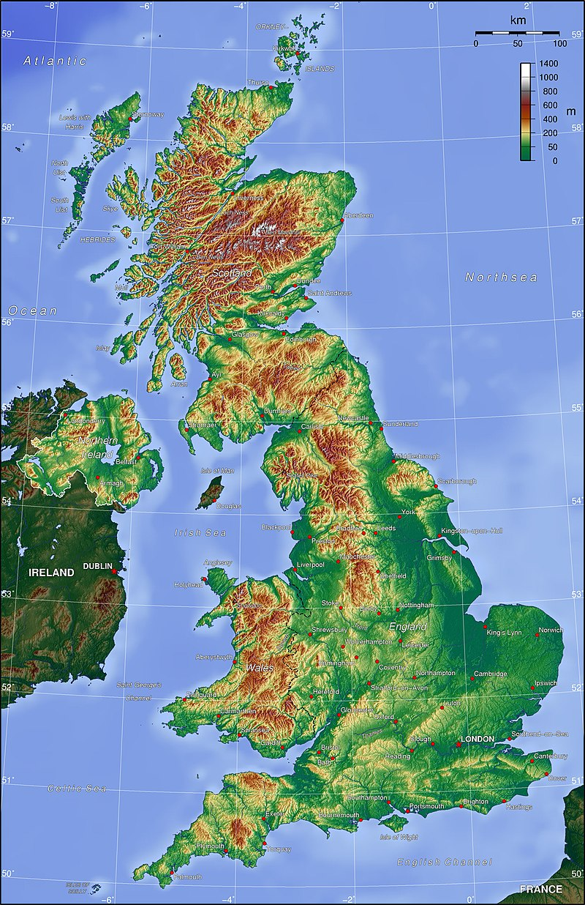

Název
Anglické královstvíSoučasný složitý název britského státu odráží jeho komplikované státoprávní dějiny. Na počátku novověku již ovládalo také Wales a Irsko a proces sjednocení dovršil Jakub I. Stuart roku 1603 propojením Skotska a Anglie personální unií. Zákony o unii z let 1706 a 1707 spojily Anglii, Skotsko a Wales do jediného království, anglicky nazvaného Great Britain podle ostrova Velká Británie. O téměř sto let později zákony o unii Velké Británie a Irska z roku 1800, jež nabyly účinnosti roku 1801, připojením dosavadního Irského království vytvořily United Kingdom of Great Britain and Ireland (Spojené království Velké Británie a Irska). A konečně po osamostatnění většiny Irska roku 1922 se britský stát roku 1927 přejmenoval na United Kingdom of Great Britain and Northern Ireland (Spojené království Velké Británie a Severního Irska).
V angličtině se dnes proto oficiálně odlišuje United Kingdom (Spojené království) jako zkratka plného názvu státu zahrnujícího i Severní Irsko a Great Britain (Velká Británie) jako politický celek složený jen z Anglie, Skotska a Walesu.[10] Podle Geografické sekce OSN, která stanovuje a standardizuje mezinárodní názvy států platné v normě ISO 3166, je jediným oficiálním mezinárodním názvem země United Kingdom of Great Britain and Northern Ireland (Spojené království Velké Británie a Severního Irska), a to zároveň plným i zkráceným.[11] V praxi se však jako zkrácený název obvykle používá United Kingdom, resp. zkratka UK. Například i internetová doména nejvyššího řádu Velké Británie je .uk. Vyskytuje se ovšem i Great Britain, zkratkou GB; pod tímto označením soutěží britští sportovci na olympijských hrách nebo vyjíždějí britské automobily do zahraničí.
I když anglické Great Britain bylo oficiálním názvem jen do roku 1801, v češtině se jako zkrácený název státu ujala jeho česká obdoba Velká Británie a používá se tak i po změně anglického názvu. Ze starších pramenů jen tuto verzi uvádí například Ottův slovník naučný v hesle Britannie Veliká nebo Slovník spisovného jazyka českého v hesle Brit. Do roku 2022 tento název stanovovala jako standardní Názvoslovná komise Českého úřadu zeměměřického a katastrálního a oficiálně ho používá například Ministerstvo zahraničí ČR[12] nebo český web Organizace spojených národů.[13] V roce 2022 změnila Názvoslovná komise Českého úřadu zeměměřického a katastrálního zkrácenou formu na Velká Británie a Severní Irsko.[14] Kromě toho se vyskytuje ještě kratší a méně formální název Británie, například v ustáleném slovním spojení bitva o Británii. Po roce 2000 se ve spisovném projevu častěji začalo jako zkrácený název objevovat i Spojené království, odpovídající anglickému United Kingdom. Tuto variantu například na svém českém webu užívá Evropská unie.[15] Ve všech případech se jako jednoslovné označení obyvatel používá Britové a jako přídavné jméno britský.
Dějiny
Ostrov Velká Británie byl v pravěku spojen s evropskou pevninou, migrace suchozemských druhů byla proto snadná a první lidé se zde objevili již před necelým milionem let, jak dokazují nálezy kamenných nástrojů v Happisburghu, připisovaných druhu Homo antecessor.[16] Anatomicky moderní lidé Homo sapiens jsou doloženi nálezem ceremoniálního pohřbu z doby před asi 30 tisíci lety.[17] Poslední doba ledová zřejmě učinila region neobyvatelným pro lidi, stálé osídlení se předpokládá od jejího skončení, asi před 11 700 lety. Před 11 tisíci lety se následkem zvyšující se hladiny oceánu oddělil ostrov Irsko a někdy kolem roku 5600 př. n. l. se potopením šíje zvané Doggerland Velká Británie oddělila od pevniny a vznikly Britské ostrovy v dnešní podobě.
Od neolitu se obyvatelé ostrovů zapojovali do mezinárodního obchodu, exportoval se zejména cín.[18] V době bronzové se zde vyskytoval lid kultury se zvoncovitými poháry, známý i z českých archeologických nálezů, a v jižní Anglii vznikl nejznámější prehistorický monument Velké Británie, komplex menhirů a kamenných kruhů Stonehenge, jehož nejstarší části byly postaveny asi před 5000 lety.[19] Na konci prehistorické doby byly ostrovy obývány keltskými národy, které sem přišly kolem roku 800 př. n. l. a přinesly halštatskou kulturu. Pojem Británie (Βρεταννική) jako první v písemné formě užil řecký mořeplavec Pýtheás z Massalie ve své práci Peri tú Ókeanú (Περί του Ωκεανού), kterou napsal kolem roku 325 př. n. l.[20][21]
Státní symboly
Vlajka Spojeného království (zvaná Union Jack) je tvořena listem o poměru stran 3:5 složeným, od roku 1801, z vlajek jednotlivých zemí – Anglie (Svatojiřský kříž), Skotska (Ondřejský kříž) a Irska (kříž svatého Patrika) resp. od roku 1922 Severního Irska. Vlajka Walesu nebyla zakomponována, Wales byl připojen k Anglii již dříve.
Státní znak Spojeného království má dvě varianty – jeden pro použití v Anglii, Walesu a Severním Irsku a druhý pro použití ve Skotsku. Jedná se o oficiální znak britského monarchy – v současné době krále Karla III., který je zároveň nejvyšším představitelem země.
Hymna Spojeného království je píseň God Save the King (česky Bože, chraň krále). V případě, že je na britském trůnu královna, píseň se mění na God Save the Queen (česky Bože, chraň královnu). Píseň byla poprvé uvedena v Královském divadle v roce 1745 jako podpora králi Jiřímu II. Autor je neznámý.
Geografie

Spojené království zaujímá většinu rozlohy Britských ostrovů, to jest skupiny ostrovů ležících severozápadně od pobřeží kontinentální Evropy. Kromě dvou hlavních ostrovů, Velké Británie a Irska, je tu řada ostrovů menších. Proměnlivé, ale mírné podnebí Britských ostrovů je ovlivňováno severní větví Golfského proudu, nazývanou Severoatlantický proud, který v západní Evropě zmírňuje zimy. Pro západní pobřeží Velké Británie jsou charakteristické vysoké úhrny srážek, které vznikají díky větrům vanoucím od Atlantského oceánu. Východní, zejména však jihovýchodní pobřeží je naopak výrazně sušší.
Skotská vysočina se vyznačuje divokou a velkolepou přírodou. Jsou zde nejvyšší hory Spojeného království (Ben Nevis 1344 m) a protáhlá jezera zvaná loch. Na západ od pobřeží Skotska leží v Atlantském oceánu dva řetězce ostrovů zvaných Vnitřní a Vnější Hebridy. Směrem na jih se země svažuje do údolí mohutné řeky Clyde. Tato oblast, známá jako Středoskotská nížina, je tvořena nízkými zvlněnými pahorkatinami s kvalitní zemědělskou půdou. Vyšší vrchoviny a mokřiny tvoří hranice s Anglií. Provincie Severní Irsko, kterou dělí od Skotska Irské moře, má zemědělskou půdu, hluboké zátoky a Lough Neagh – největší jezero Britských ostrovů.
Severní Anglie je rozdělena vápencovými a žulovými hřbety horského pásma Pennin. Na severozápadě jsou hory a třpytivá jezera. Wales je země zelených údolí, klikatících se řek, travnatých planin, zemědělských usedlostí v kopcovitém terénu a holých hor. Většinu země pokrývá Kambrické pohoří, poseté malými jezery a vodopády.
Velkou část střední Anglie tvoří zvlněná rovina, zatímco hranici se Severním mořem na východě představuje plochá nížina. Na hustě zalidněném jihovýchodě se nad úrodnými oblastmi zemědělské půdy tyčí nízké pahorkatiny z křídy zvané South Downs. Na jihozápadě země se rozprostírají rozlehlé plochy mokřin pokryté vřesovišti. Vlny Atlantského oceánu bičují skaliska rozeklaného jihozápadního poloostrova Cornwallu.